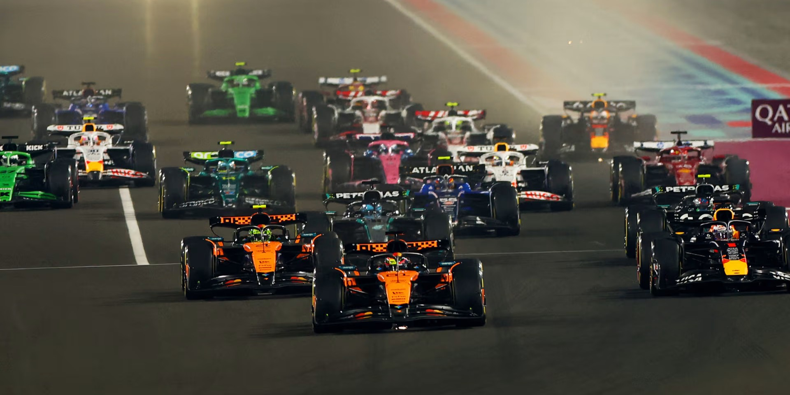
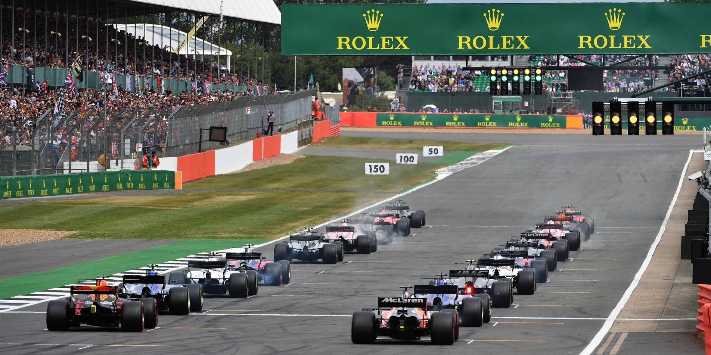
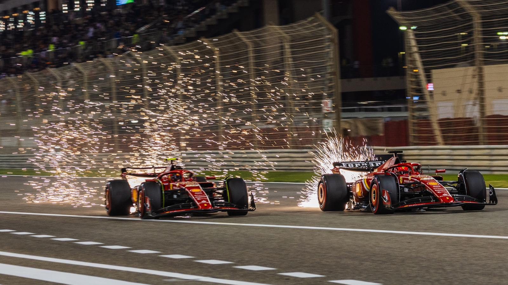

A Forma-1-es világbajnokság 1950-es indulása óta a versenyhétvégék felépítése folyamatosan fejlődött. A korai években a rajtsorrendet akár sorsolással is meghatározhatták, később pedig különböző időmérő rendszerek váltották egymást. Az idők során kialakult a háromnapos hétvége struktúrája, amely ma is a sport alapját képezi, miközben új ötletekkel és szabályokkal igyekeznek még izgalmasabbá tenni a versenyeket.
Egy hagyományos versenyhétvége általában péntektől vasárnapig tart. Pénteken két szabadedzésre kerül sor (FP1 és FP2), szombaton pedig a harmadik szabadedzés (FP3) után következik az időmérő edzés, amely három szakaszból áll (Q1, Q2, Q3), és meghatározza a vasárnapi rajtrácsot.

A három szabadedzés kulcsfontosságú a csapatok számára: az első edzésen az autó alapvető működését ellenőrzik, míg a versenyzők megismerkednek a pályával, a másodikon hosszabb etapokat futnak, a harmadikon pedig már az időmérőre készülnek. Az autók rengeteg adatot gyűjtenek, és a különböző beállítások (setupok) kipróbálása segíti a csapatokat a lehető legjobb teljesítmény elérésében a futam során.
Az időmérő rendszere az évtizedek során sokat változott. Ez biztosítja, hogy a leggyorsabbak induljanak az élről, miközben végig izgalmas marad a küzdelem. A jelenlegi kieséses rendszer 2016 óta van használatban, és azóta is a sport egyik legfontosabb eleme.
A nagydíj legalább 305 kilométeres távon zajlik, a körök száma pedig pályánként változik. A verseny előtt a pilóták felvezető köröket tesznek, majd a rajtrácsra állnak. A startfolyamat során öt piros lámpa kialvása jelzi a indulást, amely után elrajtol a mezőny. A futam során a stratégia, a gumikezelés és a csapatmunka meghatározó szerepet játszik az eredményben.

A versenyeken az első tíz helyezett szerez pontot, amelyeket az egyéni és a konstruktőri bajnokságban is számolnak. A győztes 25 pontot kap, míg a további helyezések csökkenő sorrendben egyre kevesebbet érnek, ezáltal egy kiegyensúlyozott versenyt teremt a rendszer.
Az utóbbi években bevezetett sprint hétvégék tovább növelték az események intenzitását. Ilyenkor pénteken csak egy szabadedzés van, majd sprintidőmérő következik. Szombaton rendezik a rövidebb, körülbelül 100 kilométeres sprintversenyt, amely pontokat oszt az első nyolc helyezettnek. A hagyományos időmérő csak ezután határozza meg a vasárnapi futam rajtsorrendjét.

Hány napos a standard futamhétvége?
Mióta alkalmazzák a jelenlegi időmérő rendszerét?
Hány lámpa kialvását kell megvárni a rajt előtt?
Hány versenyző szerez pontot egy verseny során?